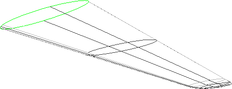
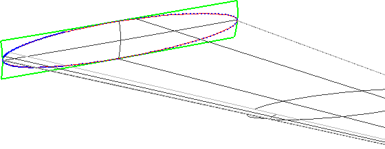

Content of this section:

 cfdmsh 4.0 documentation
cfdmsh 4.0 documentation cfdmsh 4.0 documentation


Content of this section:
File > New
Click on  in the toolbar
in the toolbar

[Ctrl] + [T] → Select the "cfdmsh.py" file on your computer
File > Import > BREP
Click on in the 3D window toolbar
Click on  in the 3D window toolbar
in the 3D window toolbar

Select "a380-stabilizer.brep_1" → New Entity > Explode →
Set "Sub-shapes Type" to "Face" → Activate the "Select Sub-shapes" option →
Select both faces colored in the following picture →
Apply and Close
Select "a380-stabilizer.brep_1" → Right-click > Show Only Children
Select all visible faces → Type in the Python console:
RebuildFace( dim = 1 )
or:
rf( dim = 1 )
Select both "RebuildFace (Edges)_*" shapes → Right-click > Show Only
Spline sets can't be fused together because they are non-coinciding. Let's start a new strategy.
Select "a380-stabilizer.brep_1" → Right-click > Show Only Children
Select all visible faces → Type in the Python console:
RebuildFace( dim = 1 , switch = 1 )
or:
rf( dim = 1 , switch = 1 )
Select the leading edge spline set (eg. "RebuiltFace (Edges)_3") → Type in the Python console:
UnrefineSplineSet( )
or:
uss( )
Repeat this operation on the last unrefined spline set ("UnrefinedSplineSet_x") until you get one whose name ends with "_3"
Select the suitable spline sets → Right-click > Hide
Window > New Window > OCC 3D view
Select "a380-stabilizer.brep_1" → New Entity > Explode →
Set "Sub-shapes Type" to "Edge" → Activate the "Select Sub-shapes" option →
Select edges indicated in the following picture →
Apply and Close
Select the all visible edges → Type in the Python console:
RebuildSpline( dim = 0 )
or:
rs( dim = 0 )
Select the all "RebuiltSpline (Vertexes)_*" → Operations > Partition →
Apply and Close
Select the "Partition_1" → New Entity > Advanced > Smoothing Surface →
Apply and Close

Select "Smoothing surface_1" → Repair > Limit tolerance →
Set "Tolerance" to 1e-4 → Apply and Close → Ok
Click on "OCC scene:1 - viewer:1"
Select both visible spline sets → Operations > Partition →
Set "Tool Objects" to "Limit_tolerance_1" →
Apply and CloseSelect "Partition_2" → New Entity > Explode →
Set "Sub-shapes Type" to "Edge" → Apply and Close → Explode
Select "Partition_2" → Right-click > Show Only Children
Select all visible edges → New Entity > Build > Compound →
Apply and Close
Select "Compound_1" → Type in the Python console:
SwitchSplineSet( )
or:
sss( )
Select "SwitchedSplineSet_1" → Right-click > Show Only
New Entity > Basic > Point → Select the vertex visible in the following picture →
Apply and Close
Select both "SwitchedSplineSet_1" and "Vertex_1" together → Type in the Python console:
MakeFillingFromUnsortedEdges( )
or:
mffue( )
Select "a380-nose.brep_1" and "FillingFromUnstortedEdges_1" → Right-click > Show Only
Select "a380-nose.brep_1" and "FillingFromUnstortedEdges_1" → Right-click in the 3D window > Display Mode > Shading
Select "a380-nose.brep_1" and "FillingFromUnstortedEdges_1" → Type in the Python console:
SetRandomColors( )
or:
src( )
You can close this study.
END OF THIS TUTORIAL
cfdmsh 4.0 documentation
tougeron-cfd.com © 2016